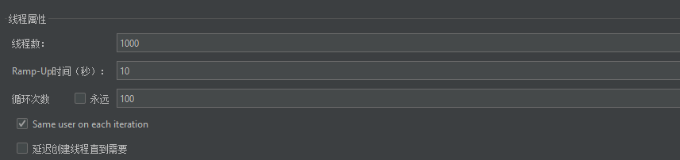
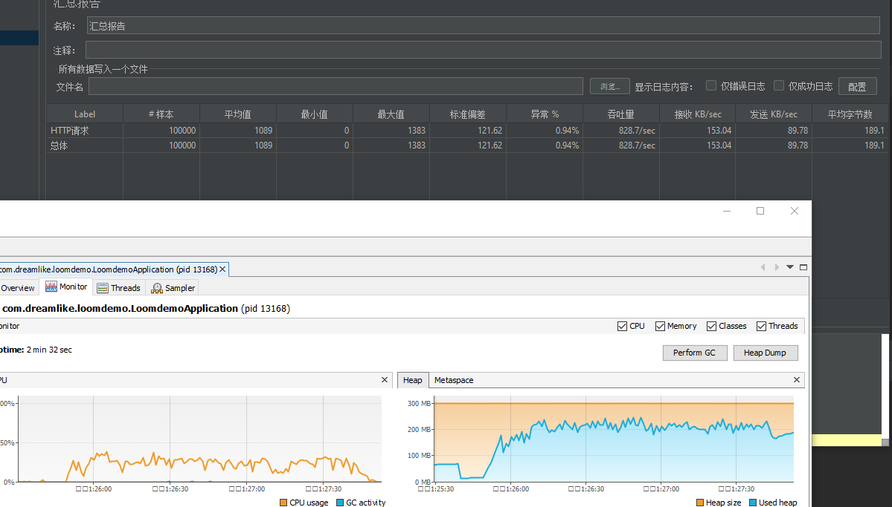
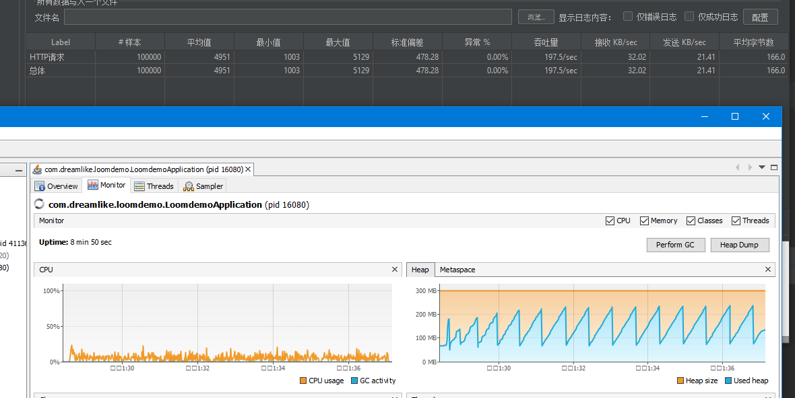
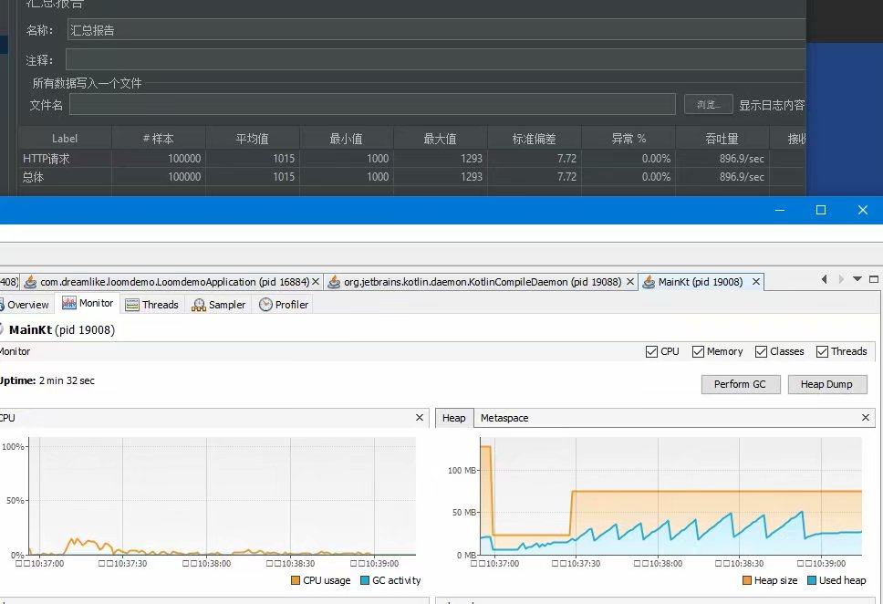
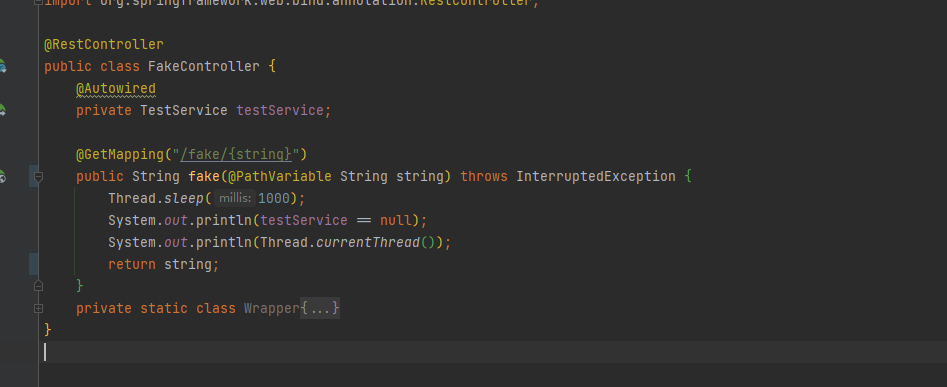

Project Loom与SpringBoot
简单的压测
测试参数

jvm参数
-Xmx300m -Xms300m
jdk 为Build 17-loom+7-342 (2021/5/11)
睡眠1s
loom

@RequestMapping("/hello")
public DeferredResult<String> hello(){
DeferredResult<String> res = new DeferredResult<>();
Thread.startVirtualThread(() -> {
try {
Thread.sleep(1000);
} catch (InterruptedException e) {
e.printStackTrace();
}
res.setResult("hello");
});
return res;
}
非loom

@RequestMapping("/word")
public String word() throws InterruptedException {
Thread.sleep(1000);
return "hello";
}
单线程vertx+kt协程

class ClientVerticle : CoroutineVerticle(){
override suspend fun start() {
var router = Router.router(vertx)
router.get("/word")
.handler { rc->
rc.vertx().setTimer(1000){
rc.end("word")
}
}
val httpserver = vertx.createHttpServer()
.requestHandler(router)
.listen(8080)
.await()
println("http server run on ${httpserver.actualPort()}")
}
}
结论
从不太严谨的Windows平台自己压自己来看 loom可以给予spring免费的性能提升 从睡眠一秒来说 loom改造后的性能大概是三四倍 持平Vertx 的 eventloop 差不多能持平Vertx 但是还是Vertx内存占用的4-6倍
全部都是默认jdk17 loom ea版本 堆开300mb 未发生full gc 目前来看loom并不会导致gc或者内存分配压力过大，反而可以更好的以简单的同步代码写法发挥cpu性能 属于是稍微一包装controller就可以得到性能提升，直接兼容旧有的BIO体系 目前我使用的是默认的协程实现即和go一致 无脑启动虚拟协程且开启工作窃取
注意：
旧有的BIO体系指的是基于jdk中原生socket api的阻塞体系 本质上仍然是阻塞api 只不过阻塞的线程由原来的平台线程（Platform Thread）改为了虚拟线程（Virtual Thread）
默认调度器采用ForkJoin线程池 开启工作窃取
改造SpringBoot
前言
对于Spring Boot的改造着眼于改造Servlet容器 把executor改 Executors.newVirtualThreadExecutor()
以内嵌的Tomcat为例子 其执行逻辑是在不开启异步支持的情况下 会等待controller结束才返回
即使你这样配置也会导致Tomcat内部线程阻塞的
@Configuration
public class TomcatConfiguration extends TomcatWebServerFactoryCustomizer {
public TomcatConfiguration(Environment environment, ServerProperties serverProperties) {
super(environment, serverProperties);
}
@Override
public void customize(ConfigurableTomcatWebServerFactory factory) {
factory.addProtocolHandlerCustomizers(protocolHandler -> protocolHandler.setExecutor(Executors.newVirtualThreadExecutor()));
}
}
所以只能去开启异步servlet支持 让对应的线程及时“离开”，controller对应方法完成时再把他写出
查阅SpringMVC文档可以得知
@RequestMapping("/word")
public DeferredResult<String> word() throws InterruptedException {
final DeferredResult<String> result = new DeferredResult<>();
Thread.startVirtualThread(()->{
try {
Thread.sleep(1000);
} catch (InterruptedException e) {
e.printStackTrace();
}
result.setResult("string");
});
return result;
}
通过DeferredResult就开启了异步响应
也就说我们可以把接口改造为用DeferredResult包裹就可以了 对于旧有代码我们肯定是不能够动的
只能通过委托的形式偷梁换柱替换掉 比如字节码工程
由于java agent需要一定门槛 而且会大幅度更改原有代码
所以我使用了ByteBuddy去运行时做委托转发+BeanPostProcessor替换注入的controller对象
为什么不通过继承去做增强？
我们经常使用的AOP是通过CGLIB等工具以字节码去继承原有类的基础上做的
但是在这个包裹返回值的场景下，由于继承重写的限制导致我们不能更改返回值类型
所以我的思路是做一个委托类似于这样：
下面的才是真正注册到路由上面的方法
public String wor1d() throws InterruptedException {
System.out.println(Thread.currentThread());
return "ADw";
}
public DeferredResult<String> worldProxy(){
final DeferredResult<String> result = new DeferredResult<>();
Thread.startVirtualThread(()->{
result.setResult(world());
});
return result;
}
这样在虚拟线程中可以通过同步写法随便阻塞 堆栈也是完整且连续的
获取包装好的类
注意
由于本人字节码学的稀烂 ByteBuddy也不太熟练 故只提供思路和示例代码
包裹方法生成
由于代码排版问题和个人水平问题 代码仅供参考
实际的思路是
1，把原有类上面的注解全部放到这个运行时生产的类上面（@RestController之类的）
2，返回值如果不是DeferredResult类型 则进行包裹
3，方法名照抄
4，对每一个方法都执行这些操作
- 迁移所有的方法注解
- 参数照抄 参数注解照抄 参数名也要照抄
5，方法体就是使用一个ControllerInterceptor（下面会讲）将实际调用转发到真正做处理的方法里面
总结一下做一个就是除了返回值不一样 其他都一样的方法出来
public static DynamicType.Builder.MethodDefinition copyMethod(Class target, ControllerInterceptor interceptor){
DynamicType.Builder.MethodDefinition now = null;
DynamicType.Builder<Object> builder = new ByteBuddy()
.subclass(Object.class)
.annotateType(target.getAnnotations());
final List<Method> methodList = Arrays.stream(target.getDeclaredMethods()).filter(m -> Modifier.isPublic(m.getModifiers())).collect(Collectors.toList());
for (Method method : methodList) {
TypeDescription.Generic returnType;
if (method.getReturnType() == DeferredResult.class){
returnType = TypeDefinition.Sort.describe(method.getGenericReturnType());
}else {
returnType = TypeDescription.Generic.Builder.parameterizedType(DeferredResult.class, method.getGenericReturnType()).build();
}
if (now == null) {
now = copyParameters(builder.defineMethod(method.getName(), returnType, Modifier.PUBLIC), method)
.intercept(MethodDelegation.to(interceptor))
.annotateMethod(method.getAnnotations());
}else {
now = copyParameters(now.defineMethod(method.getName(), returnType, Modifier.PUBLIC), method)
.intercept(MethodDelegation.to(interceptor))
.annotateMethod(method.getAnnotations());
}
}
return now;
}
转发代理
@RuntimeType
public Object interceptor(@Origin Method method, @AllArguments Object[] args) throws InvocationTargetException, IllegalAccessException {
DeferredResult<Object> result = new DeferredResult<Object>();
Thread.startVirtualThread(()->{
try {
//注意这个method实际上是我运行时生成的类的方法
//getTargetMethod是通过方法名+参数列表寻找缓存中的对应的真正需要调用的方法
Object res = getTargetMethod(method).invoke(target, args);
result.setResult(res);
} catch (Throwable e) {
result.setErrorResult(e);
}
});
return result;
}
实际生成对象
原本方法

生成的方法（图为字节码反编译结果）

偷梁换柱
public class LoomControllerRegister implements BeanPostProcessor {
@Override
public Object postProcessBeforeInitialization(Object bean, String beanName) throws BeansException {
if (isRestController(bean)){
//wrapLoom就是用动态生成的类去替换
return wrapLoom(bean);
}
return BeanPostProcessor.super.postProcessBeforeInitialization(bean, beanName);
}
//...篇幅限制不展示
}
最后在你的入口加上
@Import(LoomControllerRegister.class)
把这个类导入就可以了
这样都不用更改原有代码了 同时SpringBoot 自己也有一套针对DeferredResult的处理机制
完美嵌入 而且你换个servlet容器都可以兼容
详细代码见
loomdemo: 采用bytebuddy字节码生成 非入侵式为spring boot添加loom 虚拟线程支持 servlet容器无关性 (gitee.com)